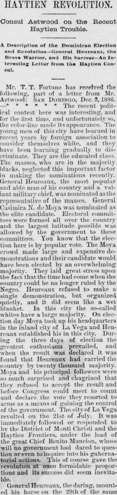
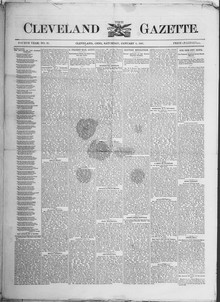

Haytien Revolution.Revolución haitiana.
The Cleveland Gazette. Cleveland, Ohio, January 8, 1887. Page 1. View the originalVer el original


See the full pageVer la página completaIn a letter dated December 3, 1886, Haytien Consul Mr. Astwood reported to Mr. T. T. Fortune on the Dominican political contest, noting that the color-line made its appearance for the first time as educated young men influenced by foreign association discriminated against the black majority. The election featured General Heureaux representing the masses and General Casimira N. de Moya representing the elite candidate, with the Moya faction making large demonstrations and expected to win by an overwhelming majority through popular vote.En una misiva fechada el 3 de diciembre de 1886, el cónsul estadounidense en Santo Domingo, Sr. Astwood, comunicó a T. T. Fortune pormenores de la disputa política dominicana, destacando que el prejuicio de color se manifestaba por primera vez ante la actitud de jóvenes letrados influidos por costumbres foráneas que discriminaban a la masa negra. La contienda enfrentaba al general Heureaux, personero de las clases populares, con el general Casimiro N. de Moya, adalid de las élites, exhibiendo la facción moyerista imponentes alardes y confiando en imponerse por abrumador sufragio popular.
FULL TEXT:TEXTO COMPLETO:
Mr. T. T. Fortune has received the following, part of which we publish:El Sr. T. T. Fortune ha recibido lo siguiente, parte de lo cual publicamos:
U. S. Consulate, San Domingo, Dec. 5, 1886.Consulado de los Estados Unidos, Santo Domingo, 5 de diciembre de 1886.
My Dear Mr. Fortune:—The political contest here was interesting, and for the first time, and unfortunately so, the color line made its appearance. The young men of this city have learned in foreign lands in Europe, association to consider themselves white, and they have been learning gradually to discriminate. They are the educated class. But General Ulises Heureaux, the brave, neglected this important factor in shaping the government entirely. General Heureaux, the most popular man with most of his country and a valiant military chief, was nominated as the representative of the masses. General Casimiro N. de Moya was nominated as the elite candidate. Electoral committees were formed all over the country and the largest latitude possible was allowed by the government to these committees. You know that the elections here is by popular vote. The Moya crowd made large and expensive demonstrations and their candidate would have been elected by an overwhelming majority. They laid great stress upon the fact that the time had come when the country could be no longer ruled by the blacks. Heureaux entered the field, a single demonstration, but organized his men and in the early days of August blanket. In this city the so-called elite refused to accept the result and the day Moya took up his headquarters in the district of Monte Christi and the reaux established his in this city. During the three days of election the flowers blossomed profusely, and when the result was declared it was found that Heureaux had carried the country by twenty thousand majority. Moya and his principal followers were so much surprised and chagrined that they refused to accept the result and before Congress could meet to count the ballots, the executive massive to find a means of gaining the control of the government. The city of La Vega revolted on the 21st of July. It was immediately followed or responded to by the District of Monte Christi and the Haytien Frontiers, under the lead of the great Chief Benito Muncion, whose will no government had dared to question or even to inquire into his gubernatorial actions. This of course gave the revolution at once formidable proportions and its success did seem inevitable.Mi estimado Sr. Fortune:—La contienda política aquí fue interesante, y por primera vez, y desafortunadamente así, la línea de color hizo su aparición. Los jóvenes de esta ciudad han aprendido en tierras extranjeras en Europa, asociación a considerarse a sí mismos blancos, y han estado aprendiendo gradualmente a discriminar. Son la clase educada. Pero el general Ulises Heureaux, el valiente, descuidó este factor importante en la formación del gobierno por completo. El general Heureaux, el hombre más popular entre la mayoría de su país y un valiente jefe militar, fue nominado como el representante de las masas. El general Casimiro N. de Moya fue nominado como el candidato de la élite. Se formaron comités electorales en todo el país y se permitió la mayor latitud posible por el gobierno a estos comités. Usted sabe que las elecciones aquí son por voto popular. La multitud de Moya hizo grandes y costosas demostraciones y su candidato habría sido elegido por una mayoría abrumadora. Pusieron gran énfasis en el hecho de que había llegado el momento en que el país ya no podía ser gobernado por los negros. Heureaux entró al campo, una sola demostración, pero organizó a sus hombres y a principios de agosto manta. En esta ciudad la llamada élite se negó a aceptar el resultado y el día en que Moya tomó su cuartel general en el distrito de Monte Cristi y los reaux estableció el suyo en esta ciudad. Durante los tres días de elección las flores florecieron profusamente, y cuando se declaró el resultado se encontró que Heureaux había ganado el país por veinte mil de mayoría. Moya y sus principales seguidores estaban tan sorprendidos y mortificados que se negaron a aceptar el resultado y antes de que el Congreso pudiera reunirse para contar los votos, el ejecutivo masivo encontrar un medio de ganar el control del gobierno. La ciudad de La Vega se rebeló el 21 de julio. Fue inmediatamente seguida o respondida por el Distrito de Monte Cristi y las Fronteras Haitianas, bajo el liderazgo del gran Jefe Benito Muncion, cuya voluntad ningún gobierno se había atrevido a cuestionar ni siquiera a indagar en sus acciones gubernativas. Esto por supuesto dio a la revolución de inmediato proporciones formidables y su éxito sí parecía inevitable.
General Heureaux, the daring, mounted his horse on the 29th of the same month, followed by one thousand men. His ranks were swelled all along the route and in the early days of August he surrounded the city of La Vega. The night preceding his well planned attack upon that city, Moya and his followers became alarmed and evacuated the city, taking refuge in the Mountains of Jarabacoa. Heureaux entered the city the next morning without firing a shot. The contest then became fearful, but with a small, well-fed army of 500 this daring man pushed on, the enemy fleeing before him in every direction. He passed through the city of Moca, reached Santiago and then joined Benito Muncion with all of his forces in front of the important city, the largest and wealthiest of the country. Muncion fought desperately. He was fighting for his home and his fortune and the district that he had so despotically ruled ever since the death of late Heureaux, but he was forced to fly and took refuge across the Haytien frontiers, from which country he has gone into exile. He has by his foolish ambition lost all of the prestige he had gained in a lifetime. Heureaux's victory is complete and he stands before the country as one of the most remarkable men in connection with its history. I am glad of this. It is another evidence of the Negro's capacity, ability and tact whenever an equal chance is afforded him. I have written you at such great length that I must now bring my communication to a close. With my best regards to you and yours, I am with great respect, your friend,El general Heureaux, el audaz, montó su caballo el 29 del mismo mes, seguido por mil hombres. Sus filas se engrosaron a lo largo de toda la ruta y a principios de agosto rodeó la ciudad de La Vega. La noche anterior a su bien planeado ataque sobre esa ciudad, Moya y sus seguidores se alarmaron y evacuaron la ciudad, refugiándose en las Montañas de Jarabacoa. Heureaux entró en la ciudad a la mañana siguiente sin disparar un tiro. La contienda entonces se volvió temible, pero con un pequeño ejército bien alimentado de 500 este hombre audaz siguió adelante, el enemigo huyendo ante él en todas direcciones. Pasó por la ciudad de Moca, llegó a Santiago y entonces se unió a Benito Muncion con todas sus fuerzas frente a la importante ciudad, la más grande y rica del país. Muncion luchó desesperadamente. Estaba luchando por su hogar y su fortuna y el distrito que había gobernado tan despóticamente desde la muerte del difunto Heureaux, pero fue obligado a huir y se refugió a través de las fronteras haitianas, desde cuyo país se ha ido al exilio. Ha perdido por su ambición necia todo el prestigio que había ganado en una vida. La victoria de Heureaux es completa y se presenta ante el país como uno de los hombres más notables en conexión con su historia. Me alegro de esto. Es otra evidencia de la capacidad, habilidad y tacto del Negro siempre que se le ofrece una oportunidad igual. Le he escrito a usted tan extensamente que ahora debo llevar mi comunicación a su cierre. Con mis mejores saludos para usted y los suyos, soy con gran respeto, su amigo,
H. C. C. Astwood.H. C. C. Astwood.